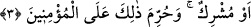

dolayı hasta çocuğunu tedâviden vazgeçen babanın durumuna benzer. Halbuki o hastalık
çocuğu helâk edecektir. Öyleyse onları iyi terbiye edin.
“Mü’minlerden bir grup da onlara uygulanan cezâya şâhid olsun.” Burada sohbet
ehlinin müşâhedesine; kişiyi ifrat ve tefritten koruması, sırât-ı müstakîme, yâni
kendisinin yürüdüğü yola hidâyet etmesi için vâsıl ve kâmil bir şeyhin gözetiminde
nefsin tezkiye ve rûhun te’dibine işâret etmektedir.
Hâfız der ki:
Bu konağı Hızır’ın yol arkadaşlığı olmadan aşmaya kalkışma
Çünkü kapkaranlık bir yol (zulümât); yolu yitirmekten kork!
3. Zinâ eden erkek, zinâ eden veya müşrik olan bir kadından başkası ile
evlenmez; zinâ eden kadınla da ancak zinâ eden veya müşrik olan erkek evlenir.
Bu mü’minlere haram kılınmıştır.
“Nikâh” Kur’an’da cinsî münâsebet değil sadece akid, yâni evlenmek mânâsında
vârid olmuştur. Râğıb der ki: “Nikâh asıl olarak evlilik akdi için kullanılır. Sonra
kinâye yoluyla cinsî münâsebet için kullanılmıştır. Bunun asıl olarak cinsî münâsebet
mânâsında olup sonradan kinâye yoluyla evlilik akdi için kullanılmış olduğunu
söylemek imkânsızdır. Araplar cinsî münâsebetin ve onu hatıra getirecek şeylerin
açıktan zikredilmesini hoş karşılamadıklarından cinsî münâsebeti ifâde eden bütün
isimler kinâye şeklinde gelmiştir. Dolayısıyla çirkinliği kasdetmek şânından olmayan
Cenâb-ı Hakk’ın Araplar’ın güzel karşıladıkları bir şeyi bırakıp çirkin gördüğü bir şeyi
kinâye yapması muhaldir.”
Âyette bildirilen hüküm mutad ve genel duruma göre vaz’ edilmiştir. Mü’minleri
zinâdan sakındırdıktan sonra zinâkârlarla evlilikten de sakındırmak için getirilmiştir.
Yâni genel olarak zinâ ve fuhşa meyilli kimse sâliha kadınlarla evliliğe rağbet etmez. O
ancak kendisi gibi bir fâsık veya müşrik bir kadının nikâhına rağbet eder. Fâhişe bir
kadını sâlih erkekler nikâhlamak istemezler, bilakis ondan nefret edip kaçarlar. Onu
ancak kendisi gibi bir fâsık veya müşrik bir erkek arzular. Çünkü benzerlik ülfet ve
birleşmeyi, farklılık ise uzaklığı ve ayrılığı gerektirir.
Bu âyette zinâ eden erkek önce zikredilmiştir. Çünkü tâlib olması bakımından nikâhta
erkek asıldır. Evlilik teklifi (hıtbe) ondan başlar. Erkeğin önce zikredilmesinin bir
sebebi de şudur. Bu âyet Medine’de müşriklerin fâhişelerinden varlıklı kadınlarla
kazançlarından kendilerine vermeleri için câhiliyye âdeti üzere evlenmek isteyen fakir
muhâcirler hakkında inmiştir. Nitekim Kâşifî der ki: “Yahudilerden veya Medine
müşriklerinden fâhişeler genelevlerde oturup evlerinin kapısına bir bayrak asarlar,
insanları oraya çağırırlar ve ücret verirlerdi. Evi ve maîşeti olmayan, yoksulluktan